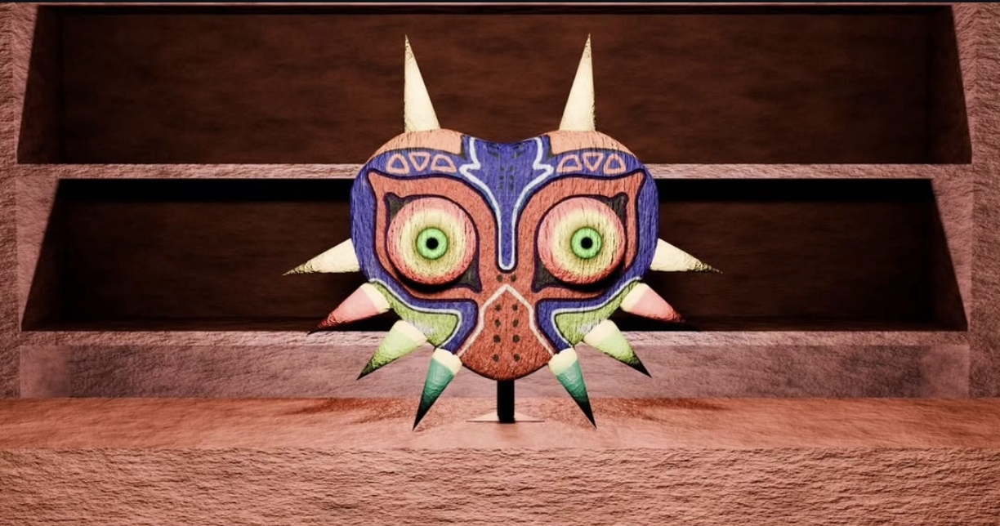

No. 007
Tipo Diseño
Majora Mask
Recreación de la máscara de Majora en Blender.
Tecnologías
Qué demuestra
El modelo es una recreación de la máscara de Majora del videojuego The Legend of Zelda: Majora's Mask. Este proyecto funciona como una prueba de luz con texturas avanzadas.
Reflexión
Este modelo es de mis favoritos debido a lo bien que quedó la texturización e iluminación.